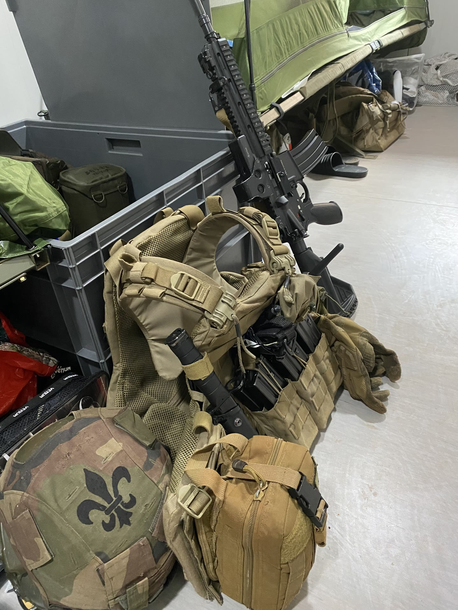
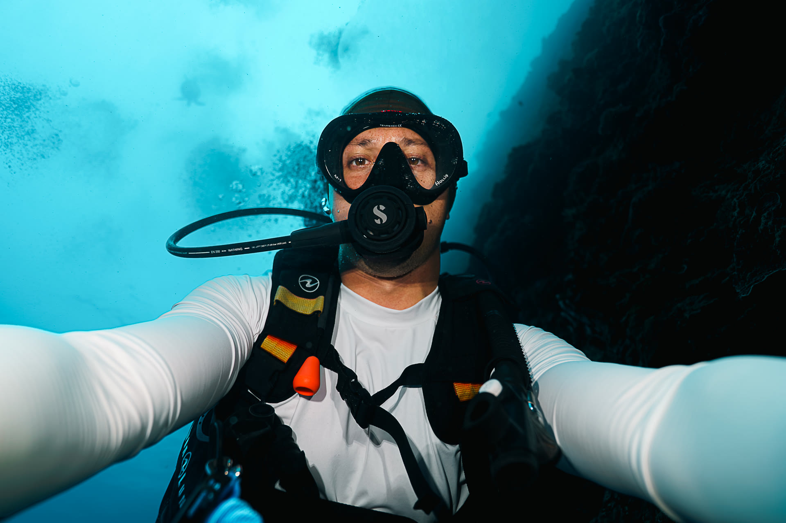

The Journey
How it all started.

Before there were cameras...
Before there were cameras, there was water. Long before filmmaking became a passion, I was already happiest with my head beneath the surface. Swimming pools, the sea, my first dives... the ocean has always felt like home.
The best dive buddy
My father introduced me to diving. Years later, we were still underwater together, laughing behind our masks. Looking back, those imperfect clips became some of my favorite memories.

A different chapter
Life took me somewhere very different. The army became a huge part of who I am. It taught me discipline, resilience, and the importance of being someone people can rely on. But even then, the camera never stayed far away.
Coming back to the ocean
Every time I had the chance to travel, I found myself looking for the water again. Not because I had a plan. Because that’s simply where I felt alive.

Today
Today, I’m building a life around the ocean. One story. One dive. One encounter at a time. I don’t know exactly where this journey will lead. That’s probably my favorite part.
This isn’t the destination.
It’s simply where the story begins.